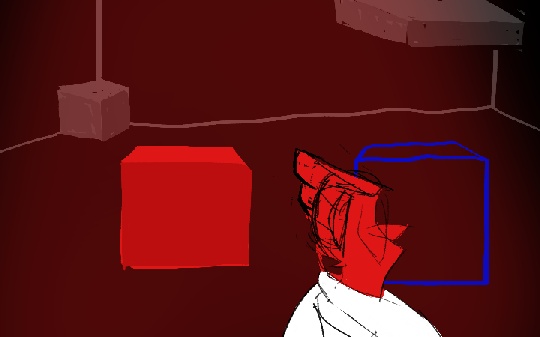
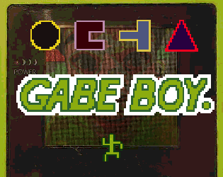
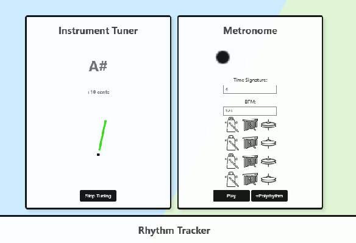
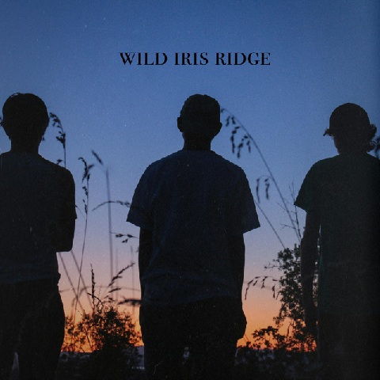
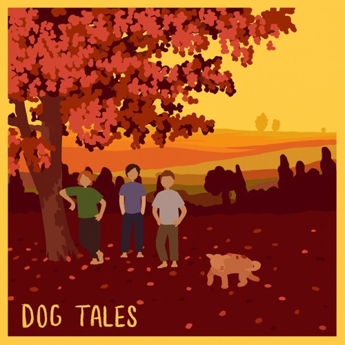

Chroma Collapse

This is a short prototype for a 1st -person, 3d puzzle/platformer that was created in Unity. I was the team manager for this project, and designed and implemented the core mechanics. This build also features a handful of original music tracks I made. Public repo available here (warning, it's messy).
Gabe Boy

A top down, 2d RPG submitted for GBJAM 12 in September of 2024. The game was coded in gdscript in the Godot engine and simulated the Nintendo Game Boy’s hardware. The team consisted of 6 people. I handled implementing the mechanics, the dialogue, and composed the soundtrack for the game.
Fair warning, the intro is a hard sell, but then things should feel pretty familiar. The game is very inspired by David Lynch - the jarring nature of the intro is a symptom of this.
Controls - Arrow keys: D-pad, Z: A, X: B, Shift: Select, Enter: Start
MetroGnome [link]

This is a web app coded in JavaScript and HTML that consists of three tools musicians use for everyday practice: a metronome, a tuner, and a rhythmic tracker. Each has visual and audio feedback for users that is synced with the internal logic of the tool.
Wild Iris Ridge (album)

Abe Luedtke’s debut album. I composed and arranged tracks 5-7, and play alto saxophone and clarinet on the rest of the album.
Dog Tales (album)

Dog Tales is a collaboration between a couple friends and I as a celebration of the Mother/EarthBound series. The album takes you on a journey through a wacky and wondrous world, encompassing a mix of familiar and new themes, places, and enemies. It incorporates elements of jazz, experimental, funk, rock, latin, and some goofiness along the way, using both the EarthBound and Mother 3 soundfonts as its medium.
Counting With Michael Fasbender
A simple project I made for a seminar class at University of Oregon. Count with him. Source on github.